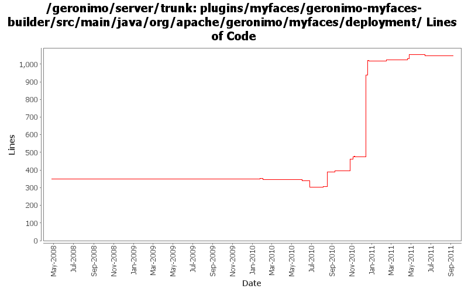

[root]/plugins/myfaces/geronimo-myfaces-builder/src/main/java/org/apache/geronimo/myfaces/deployment

| Author | Changes | Lines of Code | Lines per Change |
|---|---|---|---|
| Totals | 37 (100.0%) | 1298 (100.0%) | 35.0 |
| xuhaihong | 21 (56.8%) | 1166 (89.8%) | 55.5 |
| djencks | 10 (27.0%) | 107 (8.2%) | 10.7 |
| gawor | 4 (10.8%) | 25 (1.9%) | 6.2 |
| jdillon | 2 (5.4%) | 0 (0.0%) | 0.0 |
GERONIMO-6143 Create a fragment context for each sub modules in the EAR package
2 lines of code changed in 1 file:
GERONIMO-6079 NPE in MyFacesWebAppContext.doStart() if jsf web application is packaged into an EAR
1 lines of code changed in 1 file:
GERONIMO-6006 Upgrade MyFaces to 2.0.7
The most change is to use one LifecycleProviderFactory for each web application, as MyFaces will not use a static variable to host it in the LifeccyleProviderFactory
2 lines of code changed in 1 file:
GERONIMO-5938 Load JSF taglib xml files from bundles
5 lines of code changed in 1 file:
GERONIMO-5932 javax.faces.FACELETS_LIBRARIES is not searched in the web.xml
30 lines of code changed in 1 file:
GERONIMO-5921 Turn to use bundle style discovery for JSF deployment
134 lines of code changed in 1 file:
A little improvement to avoid duplicate parsing work for JSF configuration files
4 lines of code changed in 1 file:
XBEAN-162 update to genericed xbean-finder apis
9 lines of code changed in 1 file:
GERONIMO-5713 Only add faces-config.xml in the dependent bundles
1 lines of code changed in 1 file:
Implement facelet configuration SPI to find tag xml files in the deployed web application
91 lines of code changed in 1 file:
GERONIMO-5713 MyFaces 2.0.3 Integration
537 lines of code changed in 4 files:
Move the import configuration to the plan.xml
0 lines of code changed in 1 file:
Explicitly import a MyFaces package, so that MyFaces-core package could wired to the application bundle at the first time, not a final solution.
3 lines of code changed in 1 file:
GERONIMO-5561 fix some typos and minor logic errors. Also I'm hoping Ivan can confirm how default WEB-INF/faces-config.xml is handled
15 lines of code changed in 1 file:
Oops, fix a typo error
1 lines of code changed in 1 file:
GERONIMO-5561 First step changes, use a MyFacesWebAppContext GBean holds all the meta data, including faces configuration URLs and anntations. Once update to 2.0.3, some hack codes could be removed, and we might even store the final info data, as MyFaces would provide some more SPI.
227 lines of code changed in 1 file:
GERONIMO-5567 adapt myfaces to new way to add listeners
13 lines of code changed in 1 file:
GERONIMO-5536 application configuration resources located in lib/*.jar can not be accessed by myfaces in OSGi enviroment (Patch from Han Hong Fang)
97 lines of code changed in 1 file:
GERONIMO-5066 Fix a lot of problems with jndi including wrong finders and inconsistent adding of injections
10 lines of code changed in 1 file:
cf openejb rev 958340. marshal persistence.xml in the correct namespace, marshal methods names changed
1 lines of code changed in 1 file:
GERONIMO-5190 use openejb-jee jaxb tree for spec dds
51 lines of code changed in 1 file:
GERONIMO-5025, GERONIMO-5117. Make jndi supported directly by Modules and straighten out which contexts are shared when.
1 lines of code changed in 1 file:
GERONIMO-4815 Update MyFace integration codes due to scheme update
13 lines of code changed in 1 file:
GERONIMO-5150 type safe shared data in EARContext
1 lines of code changed in 1 file:
update to javaee6 schemas
3 lines of code changed in 1 file:
GERONIMO-5051: Pass listeners discovered in tlds during deployment to Tomcat. Tomcat won't have to scan for TLDs at startup and it is closer to what we do for Jetty
1 lines of code changed in 1 file:
GERONIMO-4996: updated myfaces deployer to work with bundles and updated dependencies
18 lines of code changed in 1 file:
GERONIMO-4996 GERONIMO-5025 separate jndi context setup from web app context since jsf needs it too. Hook up myfaces which now starts. Don't know if myfaces works
5 lines of code changed in 1 file:
GERONIMO-5030: Initial refactoring of some of the module deployment code to support deployment of Bundles. Also, implemented rfc66 extender that can actually deploy WABs with simple servlets and jsps.
3 lines of code changed in 1 file:
GERONIMO-5008 Create util methods for all the Geronimo components
5 lines of code changed in 1 file:
fix problem in EarConfigBuilder when constructing sub-configurations for wars. Rename DeploymentContext.getBundle to getDependencyBundle to try to make it clearer that it is temporary and not always available. Start updating pluto/console stuff for pluto 2.
1 lines of code changed in 1 file:
GERONIMO-4815 First step change : update Myfaces version to 2.0.0-SNAPSHOT and fix some compile errors
13 lines of code changed in 1 file:
(GERONIMO-3985) Use SLF4J as the primary logging facade for Geronimo
0 lines of code changed in 2 files: